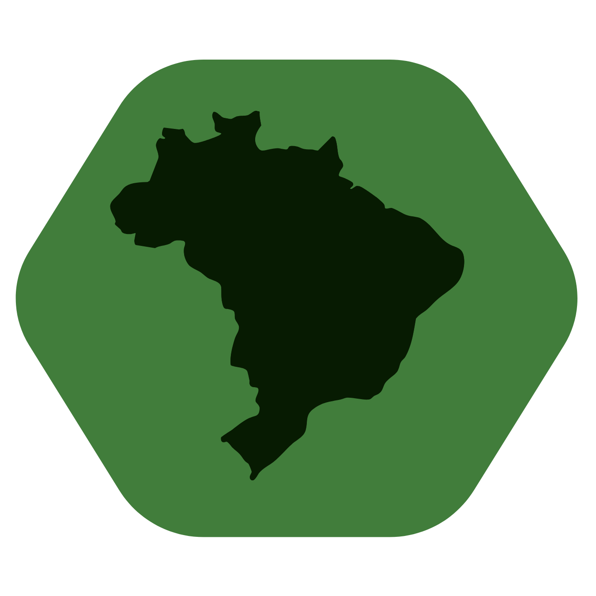
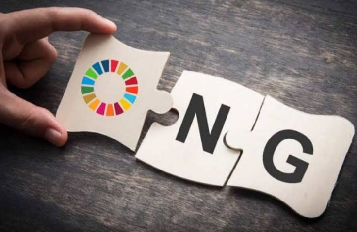
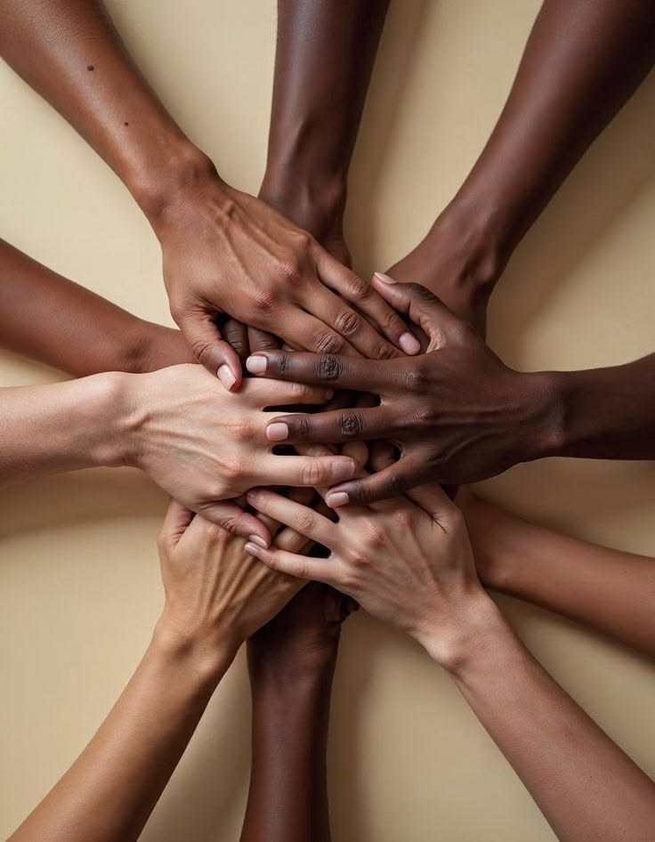
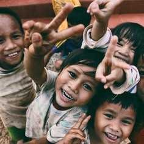
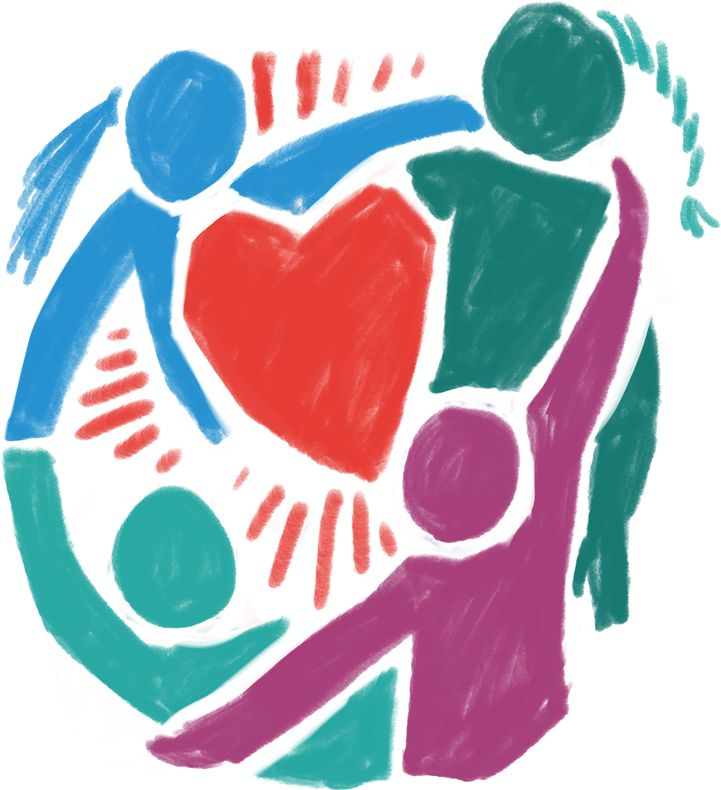

O Bem Conecta é uma plataforma criada para aproximar pessoas que desejam ajudar de organizações que trabalham para transformar vidas.
Nosso objetivo é facilitar a solidariedade, conectando doadores e ONGs de forma simples, segura e transparente.

Conheça os princípios que guiam o Bem Conecta na transformação social.

Conectar ONGs a doadores e voluntários, dando visibilidade a projetos sociais.

Ampliar a rede de apoio comunitário e incentivar doações contínuas e acessíveis.
Garantir confiança e clareza para que cada ajuda chegue a quem realmente precisa.

Promover o cuidado humano e a cooperação para construir um futuro mais justo.
Conectar ONGs a doadores e voluntários, dando visibilidade a projetos sociais.
Ampliar a rede de apoio comunitário e incentivar doações contínuas e acessíveis.
Garantir confiança e clareza para que cada ajuda chegue a quem realmente precisa.
Promover o cuidado humano e a cooperação para construir um futuro mais justo.